比起前两趟的冒险征途，这一次只想
舒服地吹吹西北的风。
如果说前两趟云南与川藏是把体能和胆量逼到边缘的远征，2026 年夏天的青甘大环线，则是一次彻彻底底放松下来的舒适漫游。
落地兰州租了一辆 2025 款七座问界 M9 增程版——零重力座椅、按摩通风、冰箱彩电大沙发，加上完全版鸿蒙智驾，从酒店车位让“小艺”接管，一路稳稳停进下一城车位，几乎没怎么亲手拧方向盘。可惜好景不长，开到敦煌增程器偏偏撂了挑子，也算实打实领教了增程长途硬核可靠性依然任重道远，那一刻还是忍不住想起在云南和川藏陪我闯过七千公里零故障的特斯拉。客观来说，见识过“中国人的景观大道”G318 后，青甘不少路段显得平淡，但青海湖傍晚的苍茫、冷湖土坡的意外回眸，以及黑独山与七彩丹霞这两处别无分号的奇观，依然值得留下这二十帧。
- Date
- 2026.07（盛夏环线）
- Vehicle
- 2025 问界 M9 增程版（七座）
- Gear
- Nikon Z f · DJI Air 3S
- Frames
- 20
- Route
- 兰州 → 青海湖 → 茶卡 · 翡翠湖 → 冷湖 · 黑独山 → 敦煌 → 张掖丹霞 → 山丹 → 兰州（约 2,634 km）
QINGHAI LAKE · JULY 05
怅寥廓，问苍茫大地
整趟青甘最豁然开朗的傍晚：雨幕垂落之后两分钟，落日从云缝劈出万道金光。
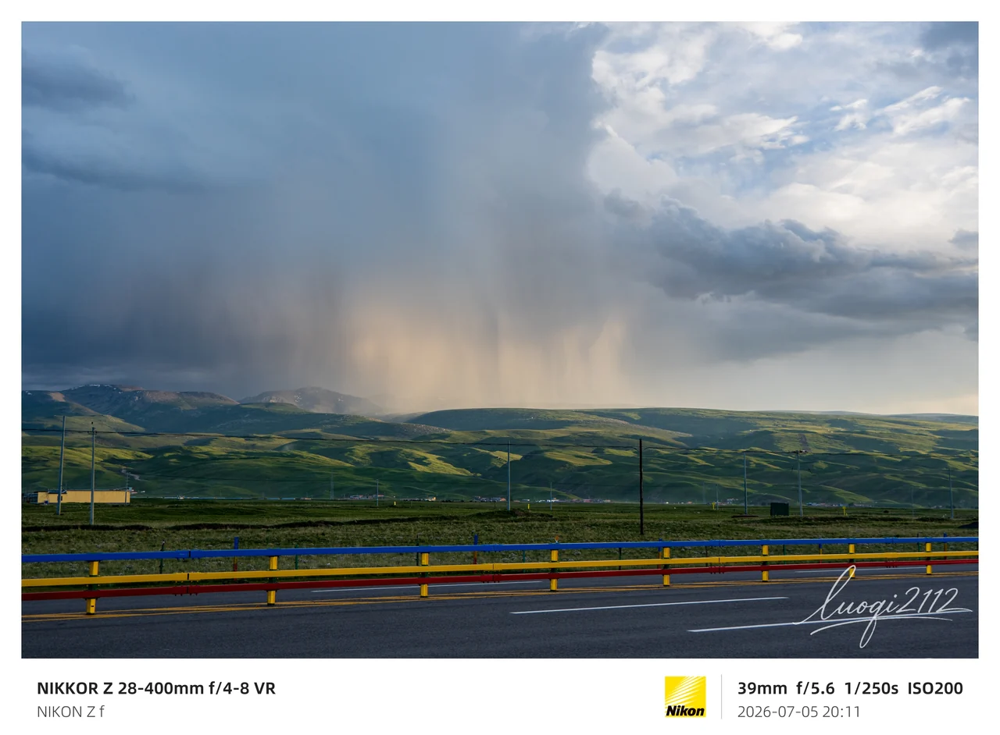
晚上八点十一分，远处黑云像开了闸一样把雨帘浇进山谷。
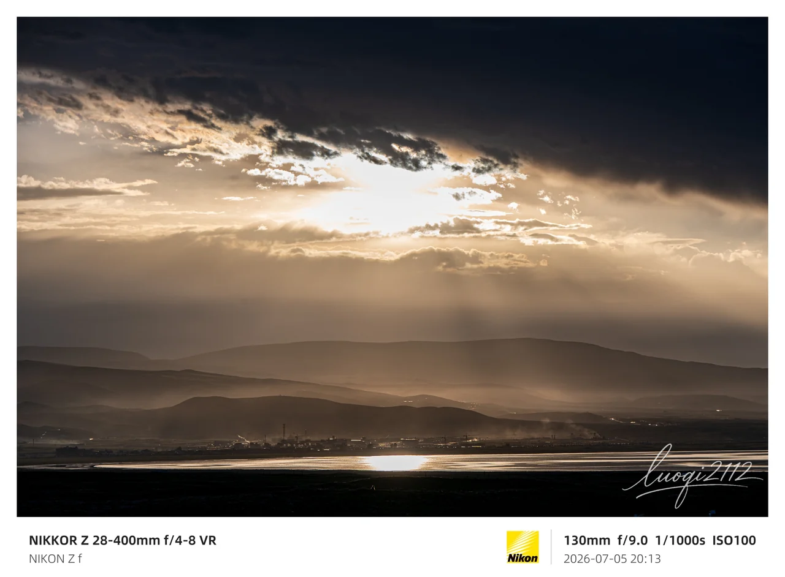
仅两分钟后的八点十三分，金光刺破厚云倾泻湖面，那一刻最是神清气爽。
青甘之行最让人心胸打开的时刻，留在青海湖边的傍晚。沿着湖畔旅游公路一路向西，高原凉风扑在脸上，整个人一下子神清气爽起来。先是南侧山间骤然垂落一道沉沉的雨幕，仅仅两分钟后，夕阳就强行撕开乌云裂缝，斜斜切出铺天盖地的丁达尔光——只有真正向西站上青海的高原，你才会浑身震撼地读懂那句：“怅寥廓，问苍茫大地，谁主沉浮。”
只有真正一路向西站上青海高原的傍晚，才读得懂“怅寥廓，问苍茫大地，谁主沉浮”。
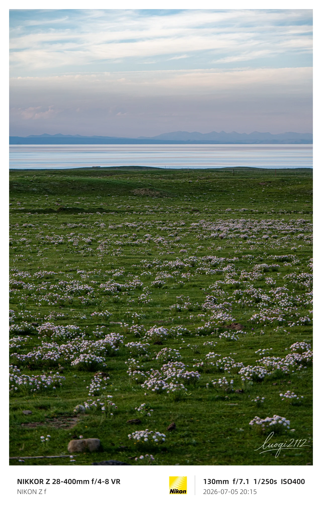
余晖落尽前的最后一帧竖幅，花海与远山一同沉进暮色。
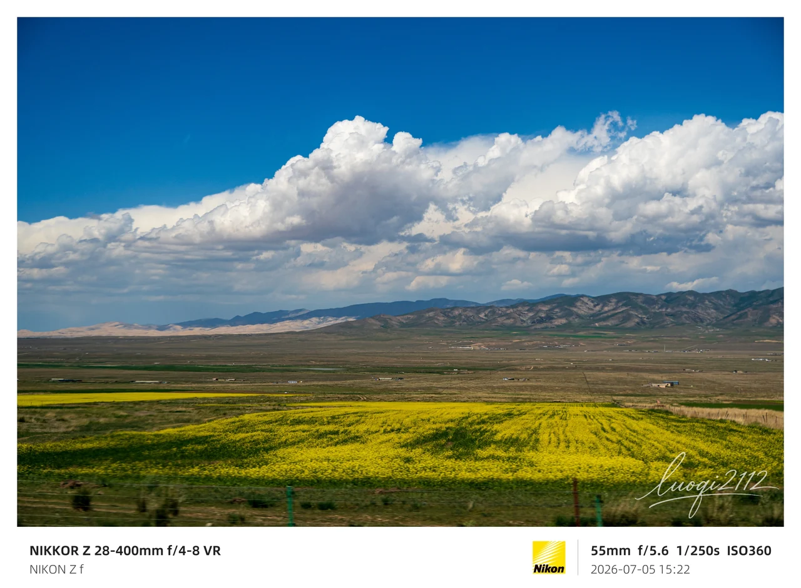
下午三点半，七月的明黄沿着湖岸一直铺到远山脚下。
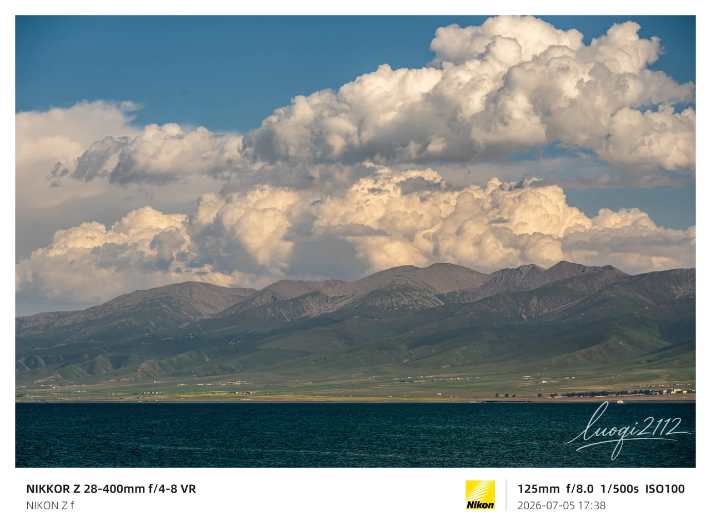
沿着旅游公路西行，云层渐渐变厚，湖水显出沉静的蓝。
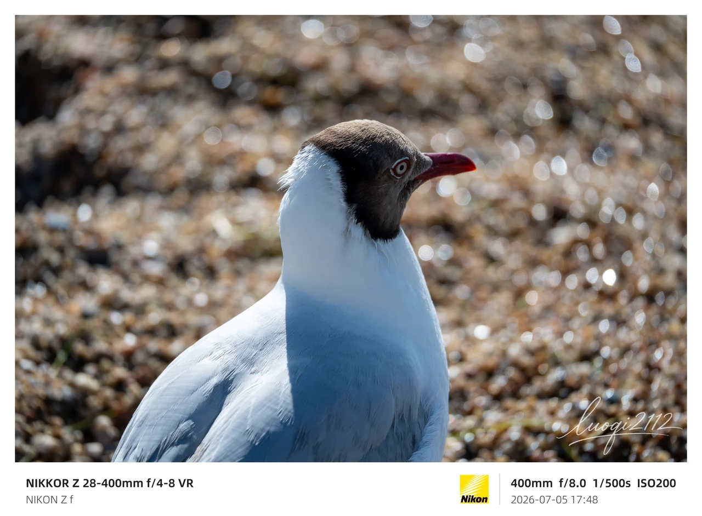
400mm 长焦追拍掠过湖面的高原水鸟。
CHAKA & DACHAIDAN · JULY 06
阴天盐湖与后期魔法
坦白说两天全赶上阴云压顶，肉眼现场看确实不好看——全靠视角与 Lightroom 救场。
拍风景这件事，老天爷赏不赏饭吃全凭运气。经过茶卡盐湖和大柴旦翡翠湖这两天，偏偏连撞两天厚重阴天——说句大实话，当时肉眼在地面看过去灰扑扑的，着实谈不上好看。能留在这里的两张成片，一半归功于升起无人机换了高空视角，另一半，必须诚恳致谢 Adobe Lightroom 和自己死磕出来的修图手艺。
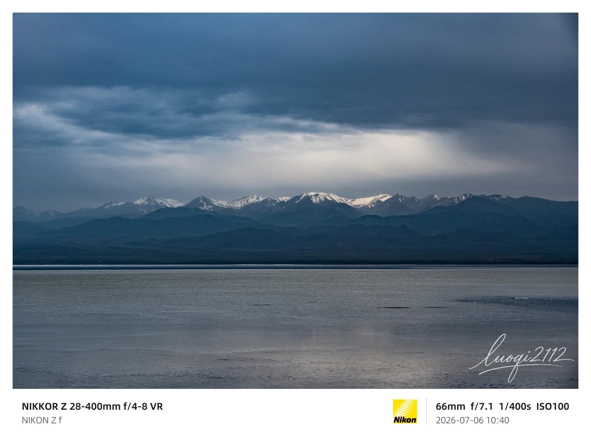
厚云压顶的茶卡没有“天空之镜”，全凭暗云底下露出的远山轮廓与后期拉回冷峻质感。

地面平平无奇，升上天空才显出盐池的色块与几何——再次向伟大的 Lightroom 致敬。
LENGHU · G215 · JULY 07
土坡回头，撞见边塞公路
不是网红打卡点——顺土坡开到雕塑脚下偶然回头，400mm 长焦突然抓住的一条边塞大路。
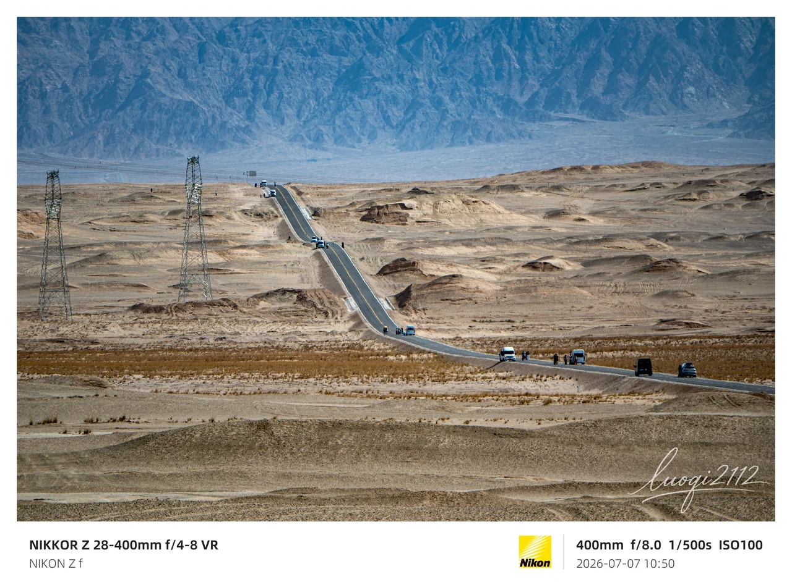
不是众人排队的网红点，只是开上土坡到雕塑脚下偶然回头的惊喜。400mm 长焦压缩下，荒漠公路有了电影般的边塞纵深。
这一组最得意的一张，反倒来自一场意外。画里的 U 型公路，并不是青甘大环线上人人排队打卡的那个网红点——只是顺着土坡把车开到“冷湖”大字标志雕塑脚下，偶然回头望了一眼，猝不及防撞见背后那条跌宕起伏扎进戈壁的长路。来不及多想，立刻拉满 400mm 长焦端，把绵延几公里的苍茫路势狠狠压进画面里，竟拍出了整趟旅程最有西北边塞味的一帧。
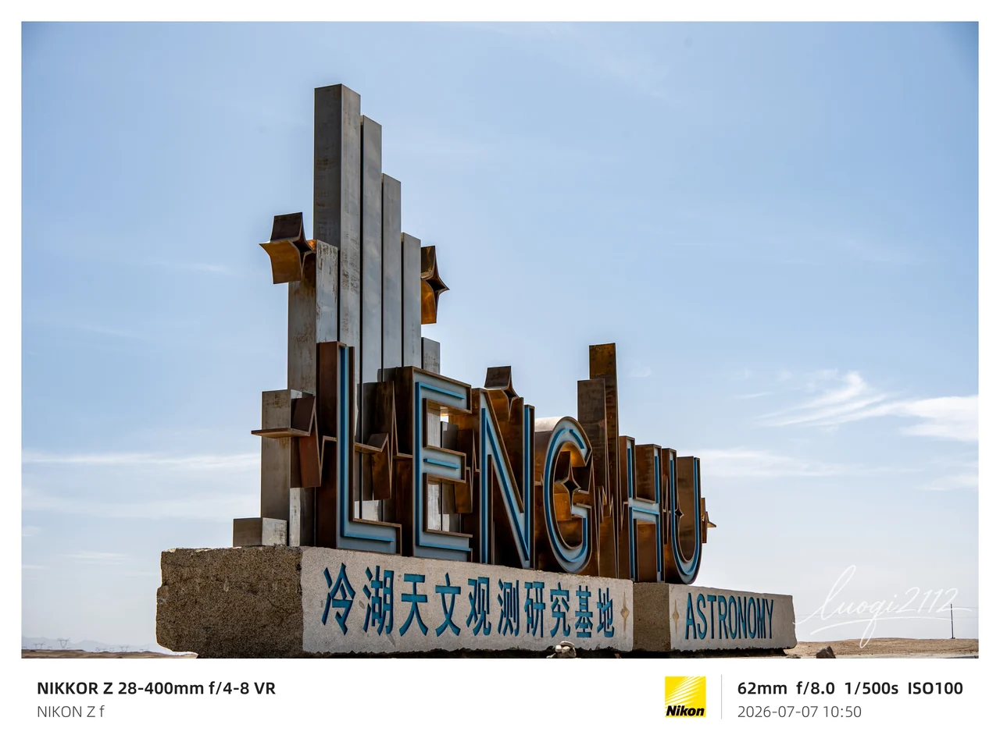
风沙里孤零零立着的地标，往里便是柴达木荒漠腹地。
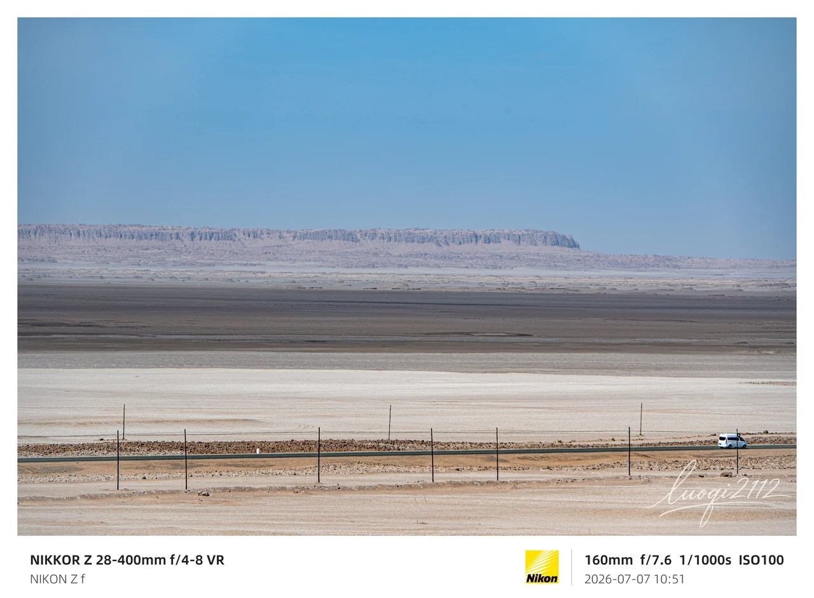
笔直的柏油路切开无边戈壁，直刺向远山。
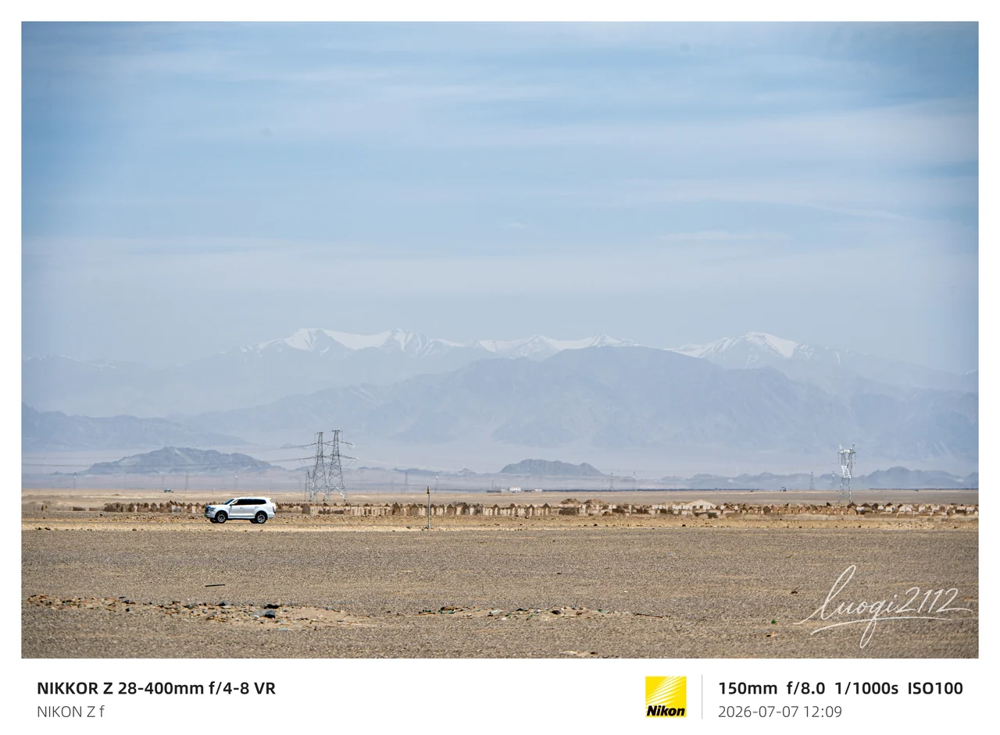
正午烈日把路面烤出热浪，车辆在苍茫山峦底下小成一粒尘。
HEIDU MOUNTAIN · JULY 07
别处难寻的水墨星球
走出柴达木戈壁的灰色地表，整片山脊突然褪去所有颜色，只留风蚀线条。
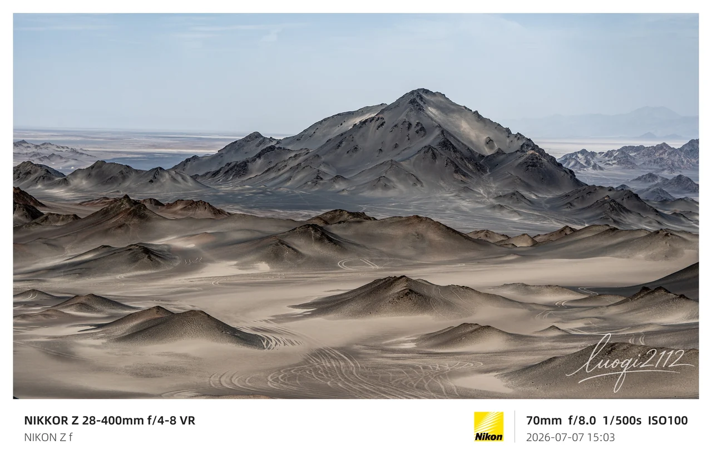
午后三点的强光下，深浅不一的砂石肌理像浓淡相间的墨迹铺开。
如果要从青甘线挑出真正独一无二、别的路线绝无仅有的风景，黑独山一定是其中之一。没有一棵树，也没有半分多余的色彩，浅灰戈壁托着墨黑嶙峋的山脊与沟壑，像直接降落在一颗荒凉的外星地表，又像一幅被风沙吹了千万年的天然水墨画。
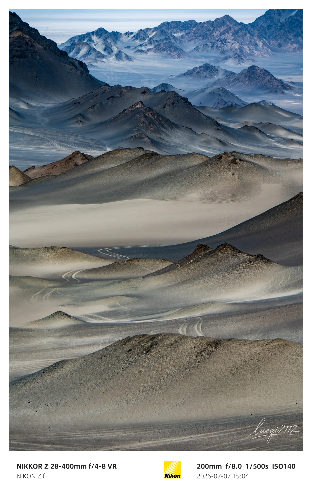
竖幅推进山体腹地，只剩风蚀出的冷硬线条，安静得不像人间。
ZHANGYE DANXIA · JULY 10
走进地理杂志封面
离开戈壁拐入繁茂的河西走廊，另一处别无分号的地质奇观在张掖展开。
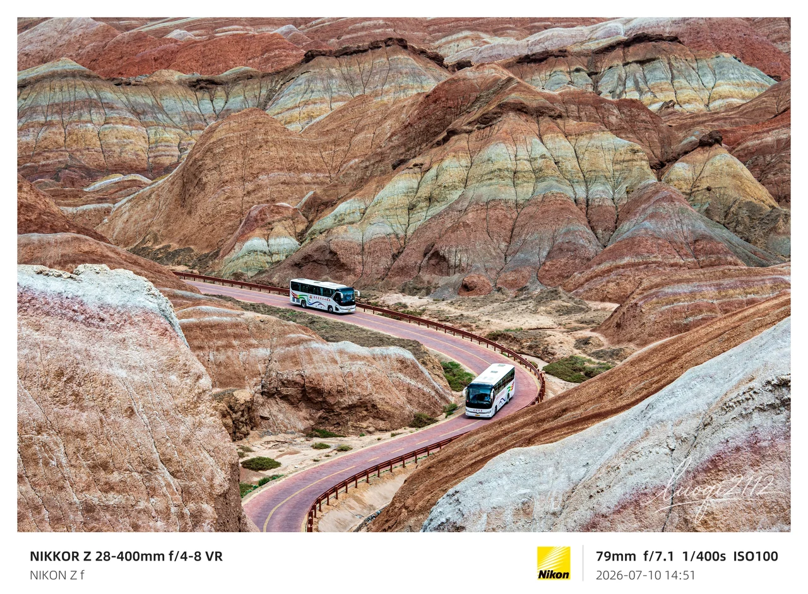
观光路在彩色山丘的褶皱间绕行，替庞大的地貌留下了可供比对的尺度。
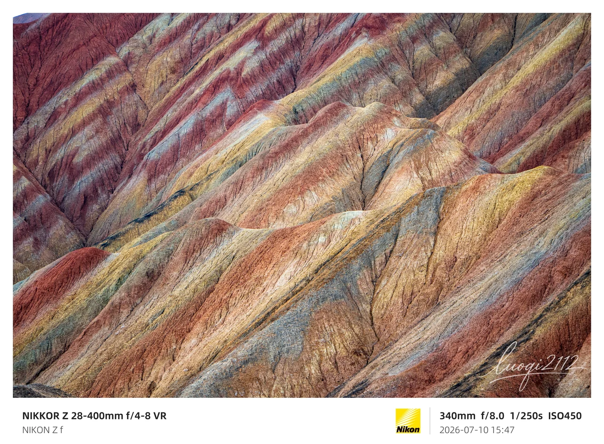
340mm 长焦切进山体局部，红、橙、灰白像油画颜料一样层层堆叠。

SHANDAN HORSE RANCH · JULY 11
在河西走廊的盛夏收尾
从青海湖的油菜花出发，六天后又在祁连山北麓的盛夏花海里收束。
环线后半程彻底卸下了赶路的紧迫感，沿着繁茂的河西走廊一路悠闲东返。敦煌之后沿途满眼生机，丝毫不是荒凉古道想象中的萧索模样；最后在山丹军马场再次撞见铺天盖地的油菜花田，从青海湖边到祁连山脚，刚好给这趟散漫自在的盛夏画了个明亮的圆。
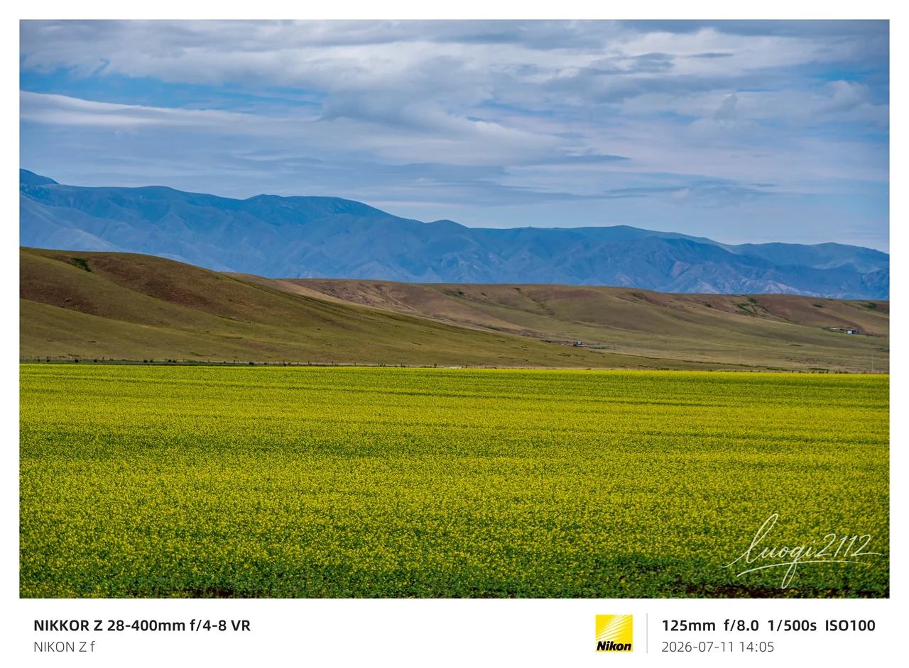
午后两点的祁连山北麓，明黄的花海和青绿草场一直涌向天边。
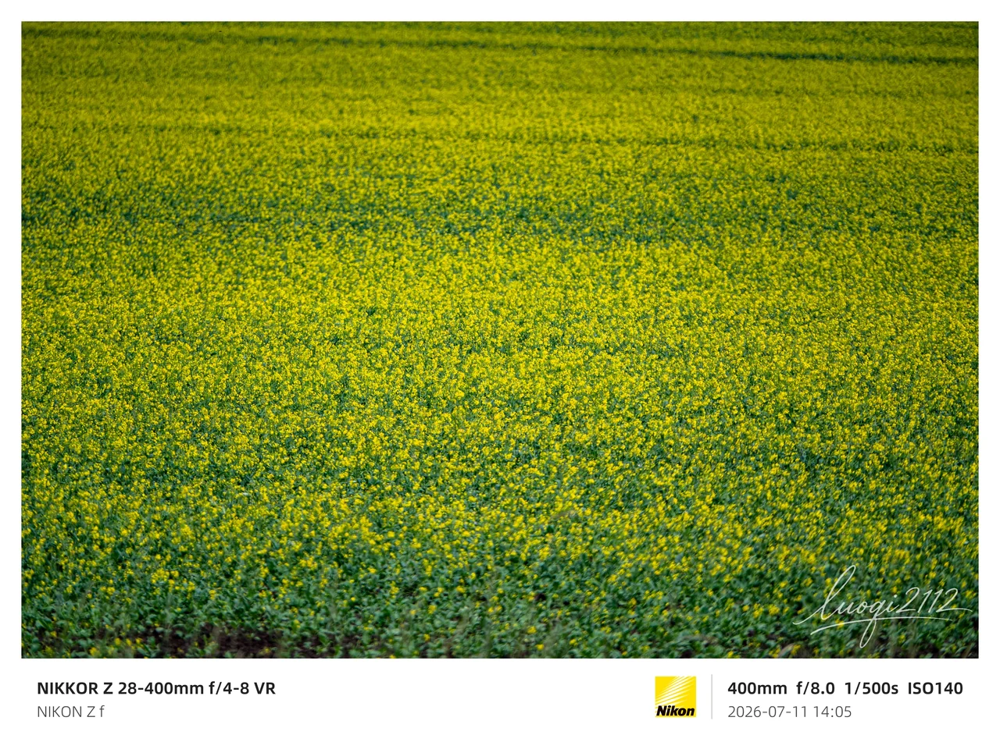
400mm 长焦拉满画面，把这趟轻松自在的西北之行定格在最明亮的颜色里。
ROLL 02 END · NORTHWEST SUMMER
有时去远征，
有时只是去吹风。
不是每一趟远行都要惊心动魄。从青海湖苍茫的傍晚、冷湖土坡的意外回眸、阴天靠后期救回来的盐湖，到敦煌趴窝的增程器与繁茂的河西走廊——这一期记下的，是一场诚实自在的盛夏西北。
浏览全部摄影作品